GIRDERS & BRIDGES · PROJECT GALLERY
Bridgework
in progress.
Structural girder fabrication and installation work delivered in demanding mountain conditions.
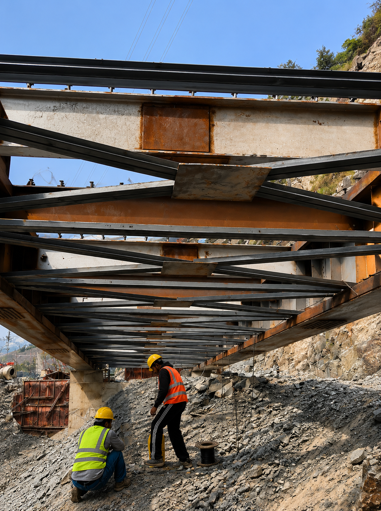
PROJECT OVERVIEW
Built for the demands of infrastructure.
These photographs capture an active girder bridge installation, including fabricated members, site welding, bracing, and foundation works.
Steel Syndicate provides precise fabrication and dependable on-site execution for bridge and infrastructure projects across the region.
12Project photographs
01Bridge works gallery
100%Actual site imagery
GIRDER BRIDGES · GALLERY
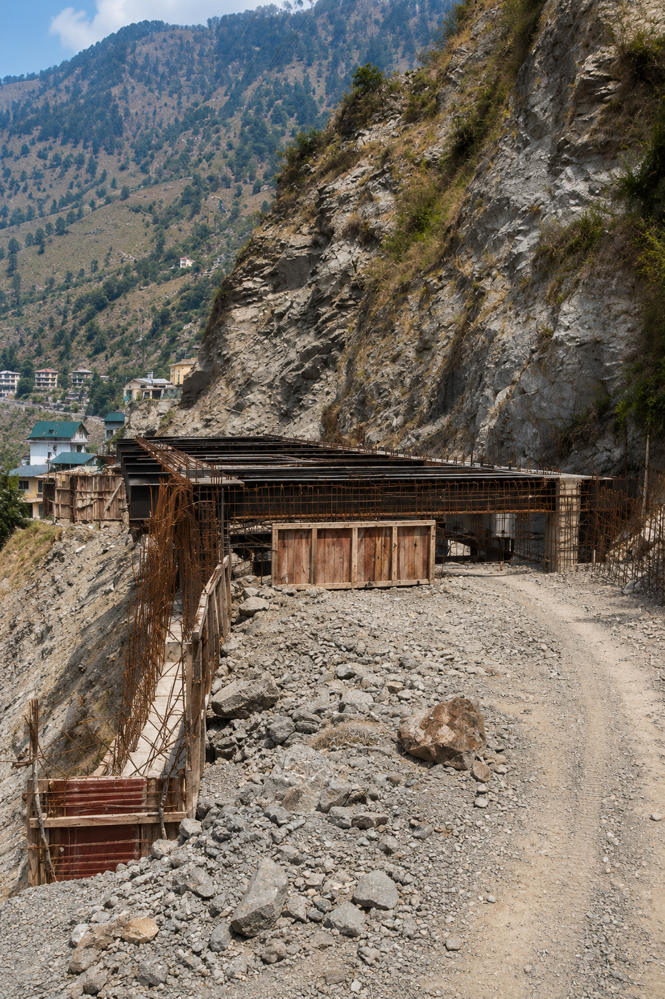
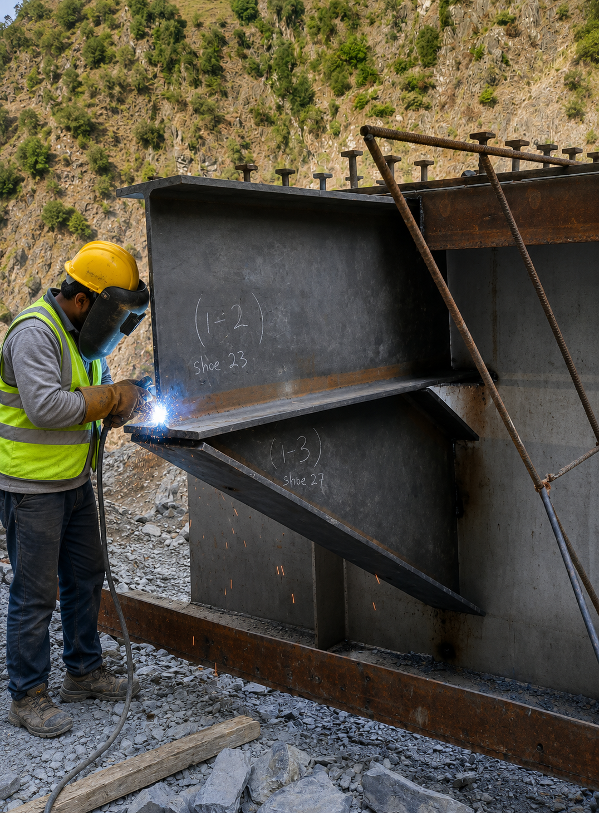
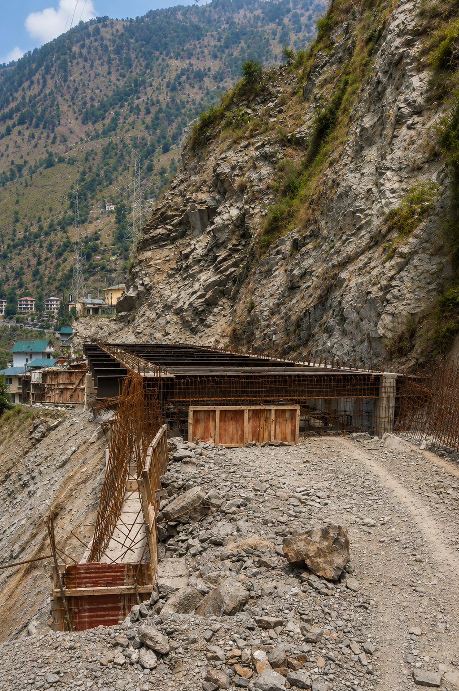
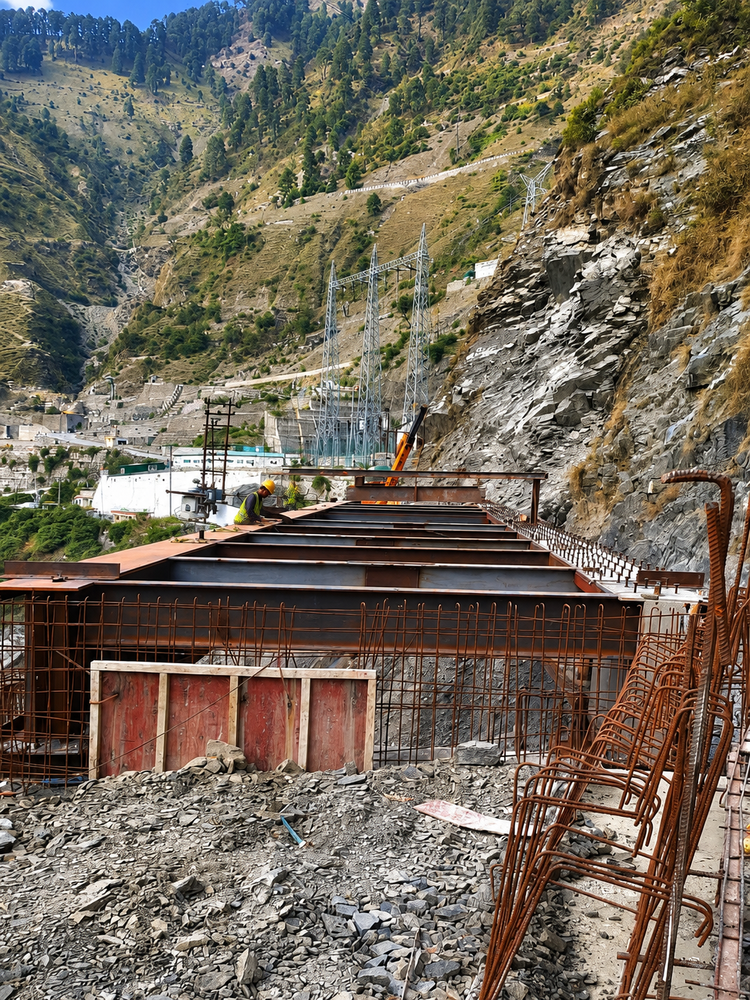
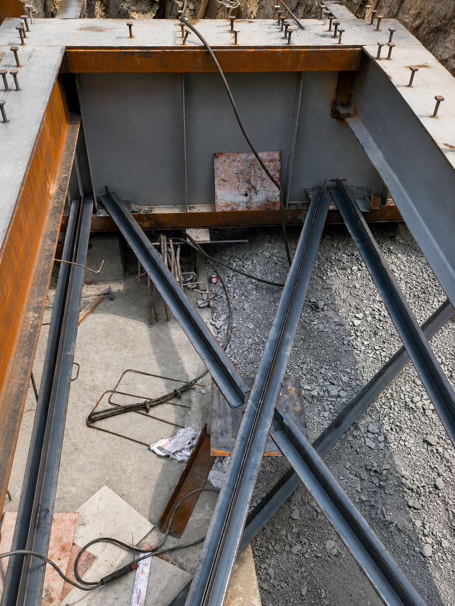

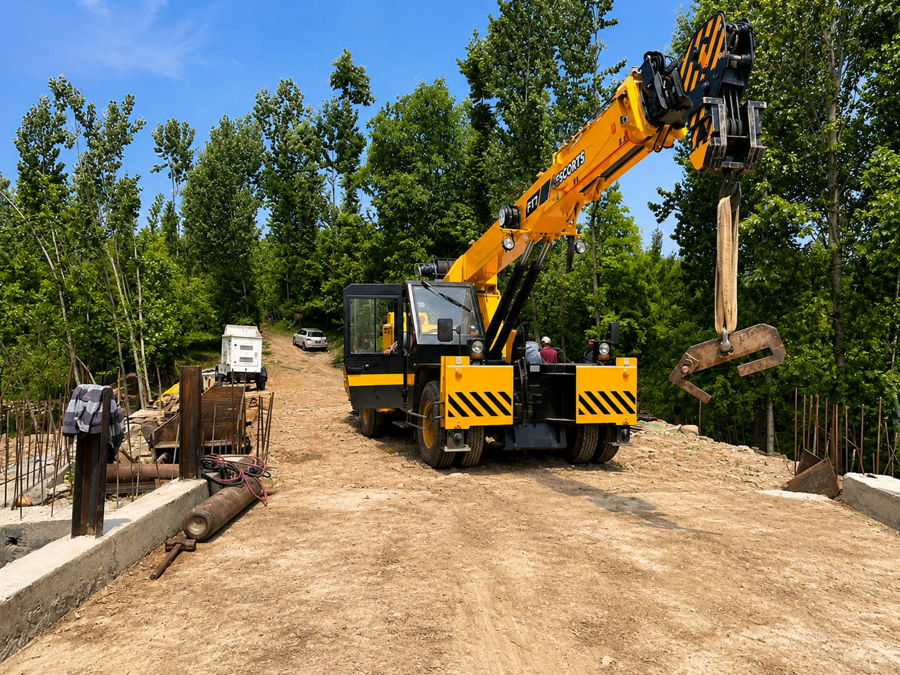
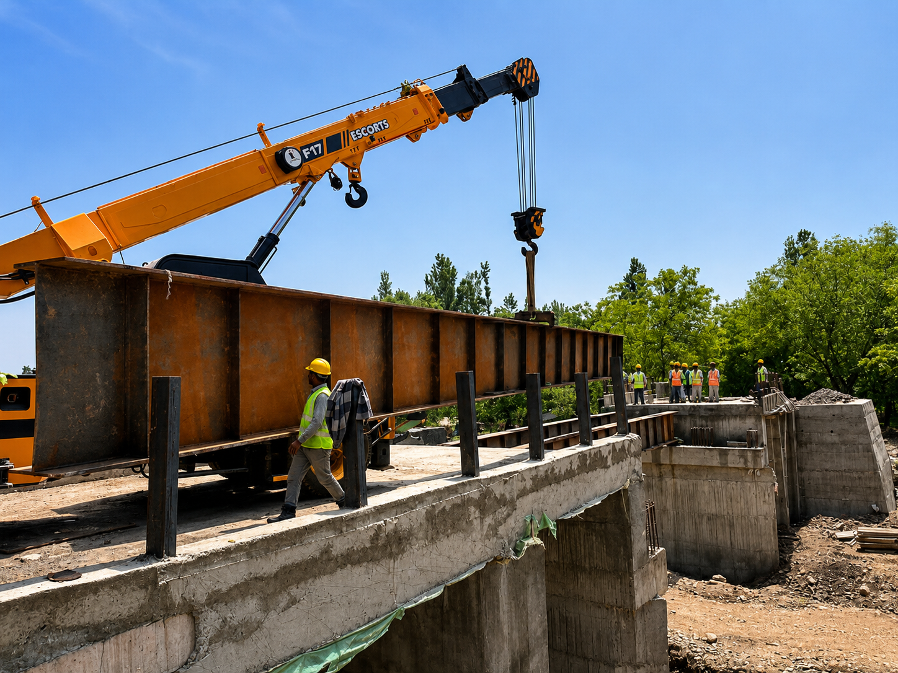
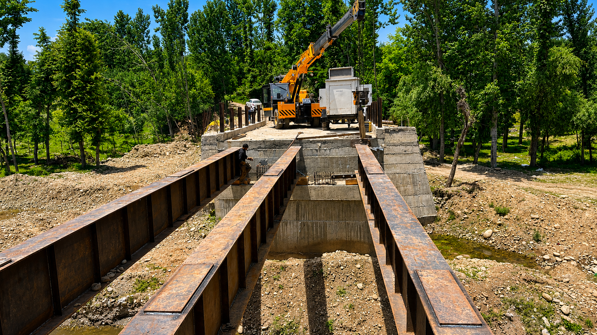
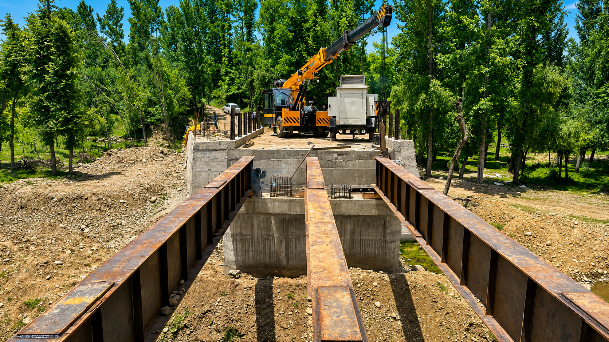
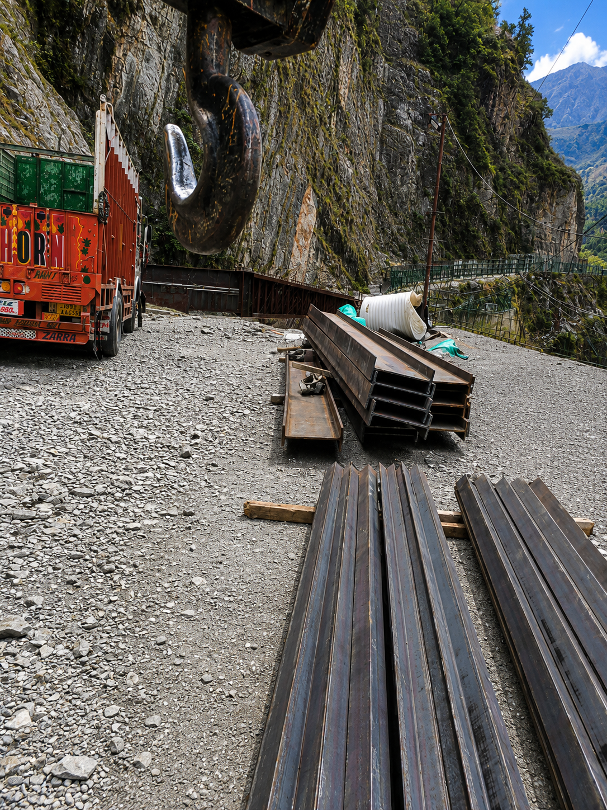